Il est aussi possible de diviser le continent autrement en fonction des peuples qui s’y trouvent. Au nord-nord-ouest et au centre, nous trouverons principalement les Hommes. Au sud-ouest et à l’est habitent les Elfes. Quant au sud-est, c'est là que se trouvent les représentants des peuples animaux.
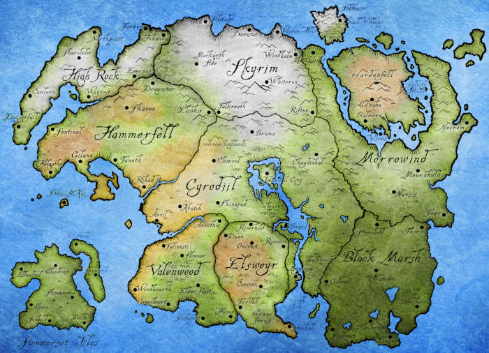
Carte de Tamriel
Archipel de l'Automne
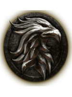
L’Archipel de l’Automne est un immense archipel se situant au Sud-Ouest du continent. Il est composé de deux grandes îles et de quelques îles de tailles plus réduites. La région est fertile et verdoyante. On y trouve d’ailleurs de très grandes fermes, des parcs naturels et quelques tours et manoirs dont les briques indiquent leurs âges vieillissants.
La plus grandes des îles, Eton Nir, abrite le point culminant de la province sur laquelle fut érigée la ville de Havrebrume. Cette ville dispose d’un style architectural particulier, composé d’immeubles qui ressemblent à des plantes grimpantes. C’est l’habitat des Altmers, peuple faisant partie de la famille des elfes.
L’Archipel de l’Automne fut d’abord une monarchie avant de devenir une oligarchie. Il est dirigé par le Conseil Aldmeri. Sa capitale est Alinor.
Bordeciel
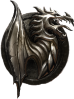
Bordeciel est la région montagneuse de Tamriel. On y trouve quatre des cinq plus hautes montagnes du continent. La plus grande, la Gorge du Monde, abrite le Haut Hrothgar, temple où vivent les Grises-Barbes, moines contemplatifs et adeptes de l’Art de la Voix.
Les habitants de Bordeciel sont les Nordiques, apparentés aux Humains. Les Nordiques vivent de la culture des vallées qui sillonnent la province et qui sont protégées du vent du nord par les montagnes. Les Nordiques sont un peuple fier, au caractère bien trempé. Pour eux, l’honneur, la détermination, la gloire et la famille sont des valeurs fondamentales.
Bordeciel est une monarchie. Son dirigeant est le Haut-Roi. Sa capitale est Solitude.
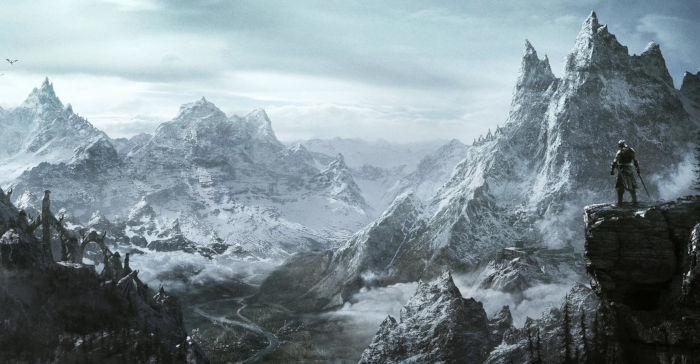
Vue sur les montanges de Bordeciel
Cyrodill
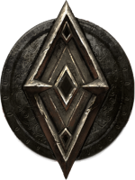
Si Cyrodill fut pendant longtemps une jungle impénétrable, ce n’est plus le cas pendant le règne de Tiber Septim. La région centrale de Tamriel devient par la suite bien plus agréable avec ses terres agricoles, ses forêts praticables et ses plateaux enneigés. La province est à l’origine par la Niben, plus grand fleuve du continent, qui prend sa source dans le lac Rumare. C’est dans ce lac que se trouve la Cité impériale.
Comme pour Bordeciel, c’est une race d’humains, les Impériaux, qui habitent la région. Ils ont l’avantage de se situer au centre du continent. De ce fait, Cyrodill est la province qui profite le plus du commerce, étant le lien entre toutes les autres provinces.
Cyrodill est une monarchie impériale. Son dirigeant est l’Empereur. Sa capitale est la Cité Impériale.
Elsweyr
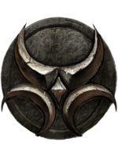
Elsweyr, territoire des Khajiits, est une région majoritairement désertique. On ne retrouve une flore abondante que sur les côtes méridionales où on peut apprécier une magnifique jungle luxuriante, parsemée ici et là de cultures de riz et de canne à sucre.
Contrairement aux autres provinces, c’est plus sa culture et ses habitants que sa géographie qui définit le mieux la région.
Elsweyr est un mélange de tribalisme et de théocratie. Son dirigeant absolu, en théorie, est la Crinière. Toutefois, dans les faits, il ne dirige pas entièrement les terres. Il partage la tâche avec les chefs de tribus et les mères de clans. La capitale est Torval.
Hauteroche
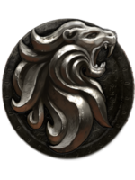
Hauteroche est une province dont le paysage ne brille pas par l’uniformité. Les sommets, recouverts de forêts, séparent la province en deux. A l’Ouest, le long de la côte, se trouvent les citées riches. A l’Est, nous pouvons différents récifs montagneux.
Au Nord, le décor se transforme en un paysage vallonné, aux nombreux villages habités principalement par des Bretons, chacun accompagné de son château où le noble local se tient fièrement.
Hauteroche est une monarchie. Son dirigeant est un Haut-Roi. Sa capitale est Daguefilante.
Marais Noir
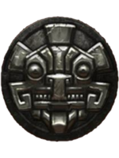
Le Marais noir est principalement composé, comme son nom l’indique, de marais et marécages boueux et à l’odeur peu agréable, d’épaisses rivières à l’eau trouble et sombre dont l’odeur s’approche de celle d’une décomposition. Rares sont les zones non-inondables, le territoire disposant d’un relief plat. Les nombreuses précipitations violentes n’aident pas non plus à garder la province sèche.
Les marées, crues et crachins rythment la vie des locaux, soit les Argoniens. Il y est très difficile de s’y mouvoir de manière terrestre. Toutefois, la véritable particularité du Marais Noir est que la notion de territoire y est inexistante : les terres marécageuses sont en éternel mouvement si bien que les villages restent rarement au même endroit.
Les meilleurs moyens de s’y déplacer sont le radeau ou encore ce que les locaux appellent le « souterrain express ». Il s’agit du Verracine, un ver géant vivant dans les zones marécageuses. Comme il se déplace avec une aisance et une vitesse remarquable, de nombreux habitants se font avaler par lui pour profiter d’un « moyen de transport rapide et efficace ».
Le Marais Noir est un mélange de tribalisme et de monopartisme. Il est dirigé par l’Organisme. Sa capitale est Helstrom.
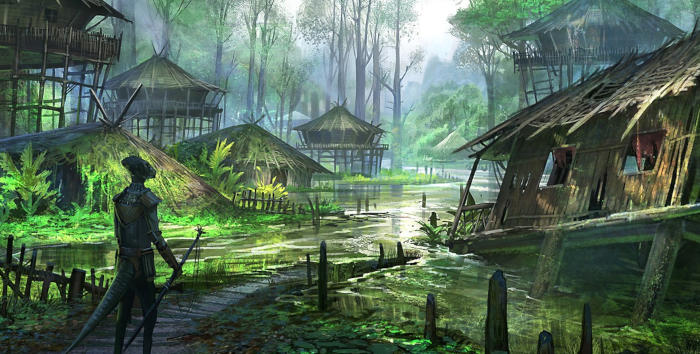
Les Marais Noirs ne sont pas faits pour y être sédentaires
Martelfell
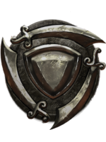
Province la plus inhospitalière de Tamriel, Martelfell – aussi connue sous le nom de Lenclume – est la région habitée par les Rougegardes. Il s’agit d’un immense désert rocailleux parsemé de quelques prairies au littoral. La chaleur peut y être écrasante et l’eau y est souvent une denrée rare, rendant la vie là-bas très difficile.
Le climat y est aride, sauf sur les côtes qui profitent de la douceur apportée par la mer. La construction des citées y est donc plus propice. L’arrière-pays, lui, est divisé entre désert et relief accidenté.
Martelfell est une monarchie. Son dirigeant est le Haut-Roi. Sa capitale est Sentinelle.
Morrowind
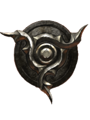
Morrowind est composé de deux parties : une grande partie continentale qui vient entourer une île volcanique nommée Vvanderfell. Quand le temps est vraiment clair, il est possible d’observer le sommet du volcan, toujours en activité.
Le paysage de Morrowind y est varié. Il y a des plaines vertes gigantesques et quelques champignons géants, des marécages, des forêts… Mais aussi des terres désolées, couvertes de cendres et de lave. La faune et la flore sont tout aussi uniques que les paysages. On y trouve des crabes et insectes géants donc la chitine sert à l’artisanat.
Morrowind fut une monarchie avant de devenir une oligarchie. Il est dirigé par le Conseil des Grandes Maisons. Sa capitale est Sombrejour.
Val-Boisé
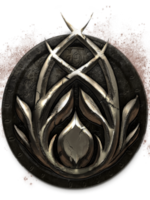
Val-Boisé est considéré comme le jardin de Tamriel. Il s’agit d’une immense et dense forêt qui pourrait faire penser à un labyrinthe végétal. A l’intérieur de ce dédale se trouvent les différentes cités des Elfes des Bois.
Il n’y a que peu de villes et villages. Les Bosmers ont passé auparavant le Pacte Vert qui leur interdit d’utiliser le bois ou les plantes que ce soit comme matériaux de construction ou encore pour se nourrir. Ils n’ont tout simplement pas le droit de faire du mal à la forêt. En échange, le Vert leur accorde de la viande en abondance selon la croyance.
Val-Boisé est une monarchie. Il est dirigé par la Dynastie Camoran. Sa capitale est Fanilesti.
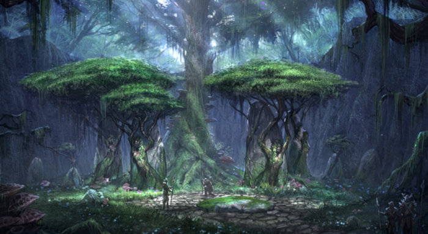
Attention au labyrinthe naturel de Val-Boisé